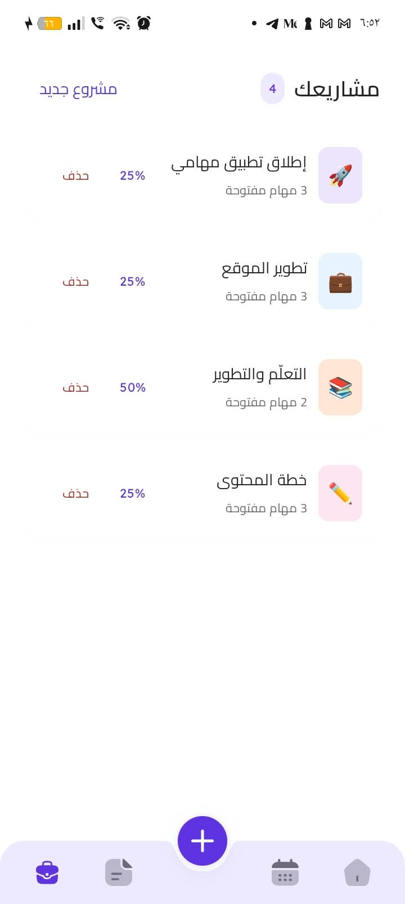

Plan your day
A home dashboard connects daily completion, overdue work, active projects and today’s tasks. A monthly calendar opens the tasks for a selected day.
An Arabic-first task and project manager with two separate native implementations: Swift/SwiftUI on iOS and Kotlin/Jetpack Compose on Android. Plan the day, organize projects and keep tasks available locally, with optional reminders and manual personal sync.



Android app captures · fictional presentation dataImplemented the Mahami product in Swift/SwiftUI and Kotlin/Jetpack Compose: platform interfaces, task and project rules, local persistence, reminders and optional personal cloud sync. Adapted the credited Figma Community design foundation for Arabic-first native experiences.
A home dashboard connects daily completion, overdue work, active projects and today’s tasks. A monthly calendar opens the tasks for a selected day.
Quick-add or edit a task with formatted notes, status, three priority levels, date, pinning and an optional project. Search by title, filter the work and complete or reopen tasks; optional reminders bring you back to the right task.
Give projects names, emoji and colors, follow open-task counts and completion, and open the work inside a project. Deleting a project retains its tasks.
SwiftUI interfaces, Observation-based screen models, Swift concurrency and SwiftData persistence support the iOS app (iOS 17+). Presentation, domain contracts and storage remain separate. The project records a successful simulator build and launch; physical-device and notification delivery acceptance remain pending.
Kotlin, Jetpack Compose/Material 3, ViewModel/StateFlow, coroutines and Room implement the Android app (Android 8+). The project records debug build/lint, physical-device installation and demo import; the published gallery contains original Android captures.
Shared contracts use stable IDs and calendar-day dates, define completion timestamps and preserve tasks when projects are deleted. Local writes and cloud merges use transaction boundaries; deletion tombstones prevent stale records from being restored by sync.
Android uses AlarmManager, permission-aware exact/approximate scheduling, stale-delivery checks and notification task navigation. iOS uses local notifications and schedules the nearest 64 future requests. Source notes record Android delivery/tap checks, with broader OS/device acceptance still open.
Both clients call an authenticated, owner-scoped atomic sync RPC. A local backup precedes the first sync and the data set binds to that account. The repository records rollback fixtures for isolation, stale writes, dates and deletion; real-account, two-device acceptance remains pending. Sync is manual, with no realtime or team-sharing claim.
Android app captures · fictional presentation data. Scroll to explore. Select a screen to open the full view.
The public repository provides implementation and engineering evidence. Project information reviewed October 8, 2026.